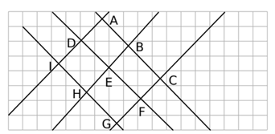
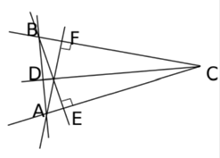
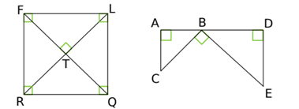

Propriétés, construction, médiatrice
Sur une figure, on a des droites (AB), (CD), (EF), (GH)… Complète le tableau en indiquant si les paires de droites sont perpendiculaires ou parallèles (réponds avec les lettres des droites).

| Droites perpendiculaires | Droites parallèles |
|---|---|
Droites perpendiculaires : (AB) ⊥ (CD), (EF) ⊥ (GH) (à ajuster selon ta figure).
Droites parallèles : (AB) ∥ (EF) (à ajuster selon ta figure).
Rappel : deux droites sont perpendiculaires si elles forment un angle de 90°. Deux droites sont parallèles si elles ne se coupent jamais.
Lucas dit que sur sa figure il y a trois paires de droites perpendiculaires. Est-il d'accord avec toi ? Si non, explique pourquoi.

En regardant la figure : il y a en réalité deux paires de droites perpendiculaires (et non trois). Lucas a tort car il a probablement compté une paire de droites qui ne forment pas exactement 90°.
Méthode : utilise ton équerre pour vérifier chaque angle entre les droites.
Construis les médiatrices des trois côtés d'un triangle ABC à la règle et à l'équerre, puis code la figure.
Rappel : la médiatrice d'un segment est la droite perpendiculaire en son milieu.
Complète les phrases suivantes avec les mots : perpendiculaire, parallèle, angle droit, parallèles.

a. angle droit
b. perpendiculaire
c. parallèles
d. parallèle
e. perpendiculaire
f. perpendiculaire
g. parallèles